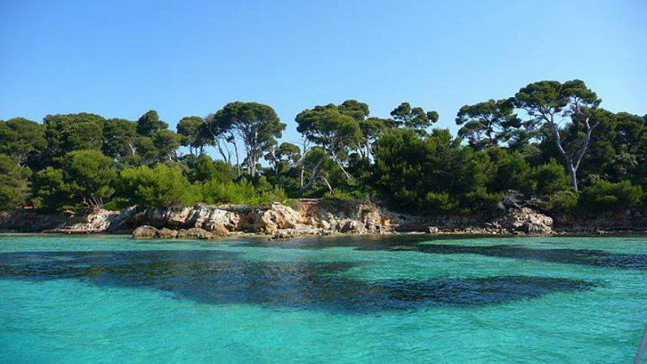
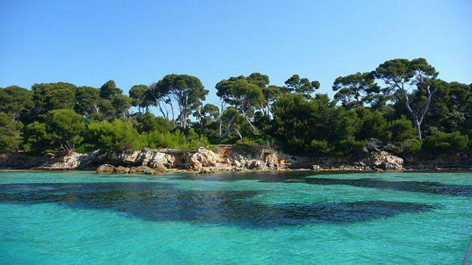
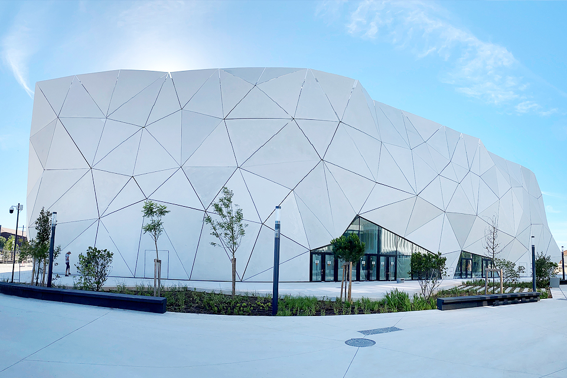

Sur les traces des grandes œuvres
1929
Île Sainte-Marguerite - Le Masque de Fer
Découvrez le fort royal qui inspira le célèbre roman d'Alexandre Dumas
 

1946
2022
Cinéum de Cannes
Découvrez le nouveau complexe cinématographique ultramoderne de Cannes
 Voir la programmation →